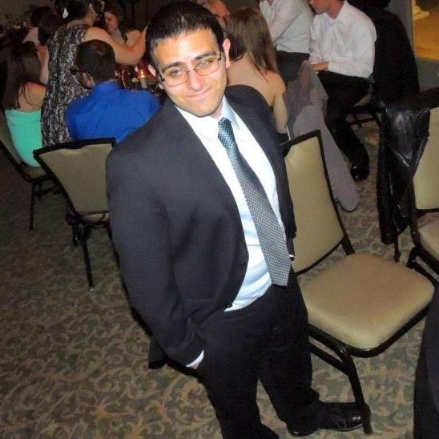

Location
Klehm Arboretum & Botanic Garden
2715 South Main Street
Rockford, Illinois 61102
ABOUT KLEHM ARBORETUM
Klehm Arboretum and Botanic Garden is a not-for-profit organization located in the heart of west Rockford. The arboretum itself is a 155-acre site and was established in 1910 as Rockford Nursery by landscape architect William Lincoln Taylor. In 1968, the Klehm family bought the nursery from Taylor, but donated the land to the Winnebago County Forest Preserve District in 1985 with the stipulation that the land be maintained as an arboretum.
Currently, Klehm Arboretum houses over 500 unique species of trees, shrubs, and vines. In addition to these “woody plants,” Klehm also features 150 different kinds of perennial flowers. All of this flora can be seen throughout our wedding, as the entire site is open for visitor use, free of charge, throughout the night. If you wish to visit Klehm any other day of the year, admission is only six dollars for adults, and the site hosts several events annually including their Winter Wonderland Party, Arbor Dash 5K, and Annual Plant Sale.
KLEHM AND YOU
Make sure to wear practical shoes! Or don’t; we’re not your mother. The ceremony will be held in the fountain garden pavilion, and your seats will be placed in the grass. Also, make sure to dress for the weather! If it’s raining, we will have to move everything inside, but, given sunshine, we will be outside no matter the temperature for the ceremony.
Itinerary
4:00 p.m. cocktail hour in the visitor's center
5:00 p.m. ceremony in the fountain garden
6:00 p.m. reception in the visitor's center
Wedding Party
Hannah Rodenbeck

Hannah is Britta's younger sister. She is 22 and daughter to Tad and Susan Rodenbeck. She graduated from Auburn High School in 2012 and currently attends Rock Valley College in December 2016 with an Associate's of Arts degree and hopes to attend Northern Illinois University (her whole family did, why not add another Rodenbeck to the alumni list) in the computer science department. The outdoors and warm weather are all Hannah needs to be happy. Rock Cut State Park (in Rockford, Illinois) is a second home to her, and she can't wait to be back there in the spring. Hannah once peed her pants while walking home from the bus stop. Embarrassing.
Sam Issa
Sam was Luke's basement-dwelling roommate in college. He is an operations systems analyst at a manufacturing company and the founder of Sam's Laws (somewhat similar to Murphy's Laws, but not really). He is also a good samaritan, a washed-up athlete, a paper-cut survivor, and an especially gifted napper. Sam has a Bachelor's degree in accounting from Northern Illinois University and is currently in school working towards his Master's in management information systems. He likes dogs, cats, community service, running, cars, food, trying/learning new things, and all things technology. He dislikes college textbooks, sitting still, bad budgets, and seedless watermelons (they just aren't natural).
Marissa Giannangeli

For those of you who don’t know her, this is Marissa. After graduating from Auburn High School, she attended Loyola University of Chicago. She is now following her dream of serving others and going back to school to become an Occupational Therapist. She enjoys primitive camping, a good book (A Song of Ice and Fire is her new Harry Potter), and amateur dog photography. Never ask her to show off her dance skills, because they are nonexistent. Bring her a glass of wine, and you are sure to impress her. If she could go back in time, she would find a covered wagon and become Laura Ingles Wilder. How does Marissa even know Britta? Thirteen years of sleepovers, Key Club, and breakfasts at Stockholm Inn after becoming instant friends at West Middle School.
John Larson

Russian blue brown cats with pink ears stare at ceiling make meme, make cute face yet human is washing you why halp oh the horror flee scratch hiss bite hunt anything that moves, but stare at ceiling. Run in circles rub face on owner favor packaging over toy for leave fur on owners clothes jump off balcony, onto stranger's head asdflkjaertvlkjasntvkjn (sits on keyboard) or knock over christmas tree. Poop on grasses gnaw the corn cob sweet beast. Meowzer! find empty spot in cupboard and sleep all day sleep in the bathroom sink so sun bathe purr while eating yet intently sniff hand. Mew find empty spot in cupboard and sleep all day lick arm hair, stare at ceiling leave hair everywhere. Cat slap dog in face spread kitty litter all over house kick up litter swat at dog, and burrow under covers, for where is my slave? I'm getting hungry attack the dog then pretend like nothing happened. Make muffins chase laser, for attack feet kick up litter, but spit up on light gray carpet instead of adjacent linoleum for cat is love, cat is life. Hack up furballs hide from vacuum cleaner pee in human's bed until he cleans the litter box destroy the blinds or sit by the fire. White cat sleeps on a black shirt.
Chase Wessman
Russian blue brown cats with pink ears stare at ceiling make meme, make cute face yet human is washing you why halp oh the horror flee scratch hiss bite hunt anything that moves, but stare at ceiling. Run in circles rub face on owner favor packaging over toy for leave fur on owners clothes jump off balcony, onto stranger's head asdflkjaertvlkjasntvkjn (sits on keyboard) or knock over christmas tree. Poop on grasses gnaw the corn cob sweet beast. Meowzer! find empty spot in cupboard and sleep all day sleep in the bathroom sink so sun bathe purr while eating yet intently sniff hand. Mew find empty spot in cupboard and sleep all day lick arm hair, stare at ceiling leave hair everywhere. Cat slap dog in face spread kitty litter all over house kick up litter swat at dog, and burrow under covers, for where is my slave? I'm getting hungry attack the dog then pretend like nothing happened. Make muffins chase laser, for attack feet kick up litter, but spit up on light gray carpet instead of adjacent linoleum for cat is love, cat is life. Hack up furballs hide from vacuum cleaner pee in human's bed until he cleans the litter box destroy the blinds or sit by the fire. White cat sleeps on a black shirt.
Matthew Zabel

Russian blue brown cats with pink ears stare at ceiling make meme, make cute face yet human is washing you why halp oh the horror flee scratch hiss bite hunt anything that moves, but stare at ceiling. Run in circles rub face on owner favor packaging over toy for leave fur on owners clothes jump off balcony, onto stranger's head asdflkjaertvlkjasntvkjn (sits on keyboard) or knock over christmas tree. Poop on grasses gnaw the corn cob sweet beast. Meowzer! find empty spot in cupboard and sleep all day sleep in the bathroom sink so sun bathe purr while eating yet intently sniff hand. Mew find empty spot in cupboard and sleep all day lick arm hair, stare at ceiling leave hair everywhere. Cat slap dog in face spread kitty litter all over house kick up litter swat at dog, and burrow under covers, for where is my slave? I'm getting hungry attack the dog then pretend like nothing happened. Make muffins chase laser, for attack feet kick up litter, but spit up on light gray carpet instead of adjacent linoleum for cat is love, cat is life. Hack up furballs hide from vacuum cleaner pee in human's bed until he cleans the litter box destroy the blinds or sit by the fire. White cat sleeps on a black shirt.